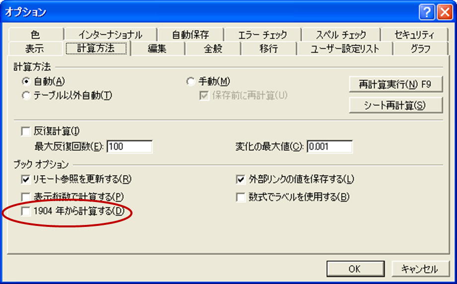
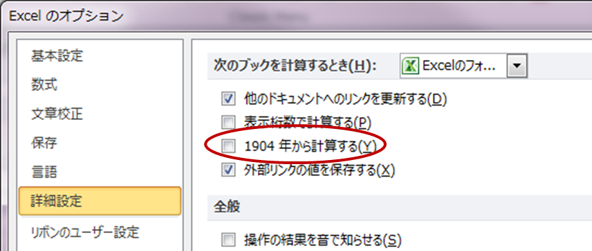
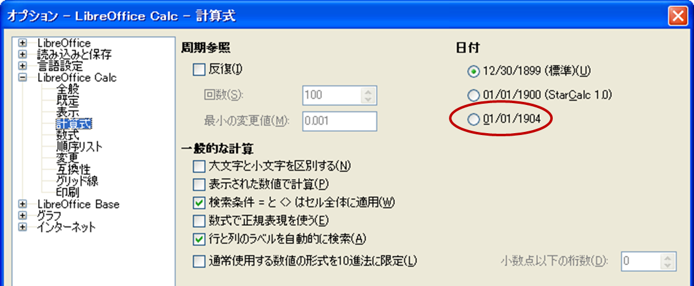

ファイル内部の日付の基準日の設定¶
Excelは、ファイル内部では数値型として値を保持しており、値が0の場合は基準日として、通常は 「1900年1月0日（1899年12月31日）」 を表します。
この基準日は、設定によって変更することができ、ファイルごとに設定を持ちます。
Excelの1904年始まりの設定変更方法¶
Excelのバージョンによって設定方法は変わります。
- Excel2000～2003の場合、メニュー「ツール」-「オプション」から表示されるダイアログ中のタブ「計算方法」から設定できます。
- Excel2007の場合、Officeボタンの「オプション」から表示されるダイアログ中のペイン「詳細設定」から設定できます。
- Excel2010の場合、メニュー「ファイル」の「オプション」から表示されるダイアログ中のペイン「詳細設定」から設定できます。
- LibreOfficeの場合、メニュー「ツール」-「オプション」から表示されるダイアログ中のペイン「LibreOffice Calc」-「計算式」から設定できます。

{kind=link}
Excel2002(XP)の場合の1904年始まりの設定

{kind=link}
Excel2010の場合の1904年始まりの設定

{kind=link}
LibreOfficeの場合の1904年始まりの設定
ライブラリによる1904年始まりの判定方法¶
Apache POIにおける1904年始まりの判定方法¶
Apache POIの場合、ファイルのフォーマットによって取得方法が変わります。
- 公開されていないメソッドなのでリフレクションを使用して取得します。
- 本ライブラリでは、 POICell#isDateStart1904() 中のメソッドで実装されています。
- 1904年始まりかどうかの設定はファイル単位に持つため、Workbookを取得して判定を行います。
final Workbook workbook = cell.getSheet().getWorkbook();
if(workbook instanceof HSSFWorkbook) {
// 拡張子がxlsの場合
try {
Method method = HSSFWorkbook.class.getDeclaredMethod("getWorkbook");
method.setAccessible(true);
InternalWorkbook iw = (InternalWorkbook) method.invoke(workbook);
return iw.isUsing1904DateWindowing();
} catch(NoSuchMethodException | SecurityException e) {
logger.warn("fail access method HSSFWorkbook.getWorkbook.", e);
return false;
} catch(IllegalAccessException | IllegalArgumentException | InvocationTargetException e) {
logger.warn("fail invoke method HSSFWorkbook.getWorkbook.", e);
return false;
}
} else if(workbook instanceof XSSFWorkbook) {
// 拡張子がxlsxの場合
try {
Method method = XSSFWorkbook.class.getDeclaredMethod("isDate1904");
method.setAccessible(true);
boolean value = (boolean) method.invoke(workbook);
return value;
} catch(NoSuchMethodException | SecurityException e) {
logger.warn("fail access method XSSFWorkbook.isDate1904.", e);
return false;
} catch(IllegalAccessException | IllegalArgumentException | InvocationTargetException e) {
logger.warn("fail invoke method XSSFWorkbook.isDate1904.", e);
return false;
}
}
JExcelAPIにおける1904年始まりの判定方法¶
JExcel APIの場合も同様にWorkbookから取得しますが、セルクラスから上位のSheetクラスなどを取得できないため不便です。
- 公開されていないメソッドなのでリフレクションを使用して取得します。
- 本ライブラリでは、 JXLUtils#isDateStart1904(...) 中のメソッドで実装されています。
- 1904年始まりかどうかの設定はシートにも引き継がれるため、Sheet、Wookbookのどちらからも判定できます。
// Workbookを元に判定を行う場合
public static boolean isDateStart1904(final Workbook workbook) {
ArgUtils.notNull(workbook, "workbook");
if(workbook instanceof WorkbookParser) {
try {
Field field = WorkbookParser.class.getDeclaredField("nineteenFour");
field.setAccessible(true);
boolean value = field.getBoolean(workbook);
return value;
} catch (NoSuchFieldException | SecurityException e) {
logger.warn("fail access field WrokbookParser#nineteenFour", e);
return false;
} catch (IllegalArgumentException | IllegalAccessException e) {
logger.warn("fail invoke field WrokbookParser#nineteenFour", e);
return false;
}
}
return false;
}
// Sheetを元に判定を行う場合
public static boolean isDateStart1904(final Sheet sheet) {
ArgUtils.notNull(sheet, "sheet");
if(sheet instanceof SheetImpl) {
try {
Field field = SheetImpl.class.getDeclaredField("nineteenFour");
field.setAccessible(true);
boolean value = field.getBoolean(sheet);
return value;
} catch (NoSuchFieldException | SecurityException e) {
logger.warn("fail access field SheetImpl#nineteenFour", e);
return false;
} catch (IllegalArgumentException | IllegalAccessException e) {
logger.warn("fail invoke field SheetImpl#nineteenFour", e);
return false;
}
}
return false;
}